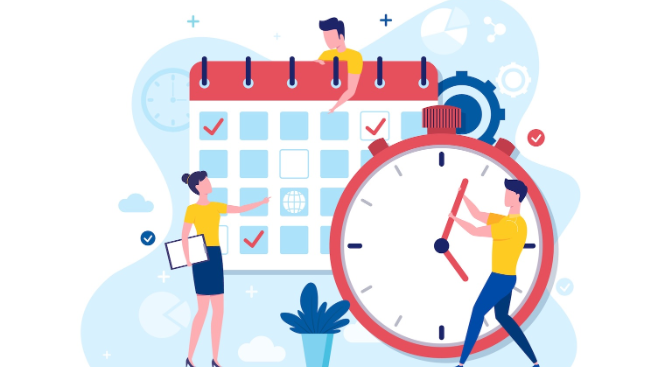

في زمنٍ تتسارع فيه الأحداث وتتنافس فيه الشاشات على جذب انتباهنا، يصبح الوقت أثمن ما نملك. لا تنتظر أن يصبح لديك وقت—اصنعه. السيطرة على الوقت تبدأ بخطوات بسيطة يومية يمكن أن تغير نمط حياتك بالكامل.
الخطوة الأولى: راقب أين يذهب وقتك
لا يمكنك تحسين ما لا تقيسه. سجّل نشاطاتك لمدة 3 أيام — ما التطبيقات التي فتحتها؟ كم من الوقت قضيت في تصفح بلا هدف؟ عندما ترى الأرقام أمامك، ستعرف ما الذي يجب تغييره.
ضع قواعد بسيطة ليومك
- حدد 3 أولويات يومية ولا تبدأ بما عداها إلا بعد إنجازها.
- استخدم مؤقتًا (مثل تقنية بومودورو: 25 دقيقة تركيز + 5 راحة).
- حدّد أوقاتًا لوسائل التواصل — لا تدخلها إلا في فترات مخصصة.
تعلم أن تقول لا
رفض الالتزامات غير الضرورية أو تأجيلها يمنحك مساحة لإنجاز ما يهمك. قول "لا" مهارة تحمي وقتك وترفع من جودة عملك وحياتك الشخصية.
استثمر وقت الفراغ بذكاء
لا تملأ كل لحظة بتمضية وقت على الشاشة. خصص دقائق للقراءة، للمشي أو للتفكير الهادئ — هذه الفترات الصغيرة تجدد طاقتك وتزيد تركيزك لاحقًا.
التغلب على الإلهاءات الرقمية
اجعل هاتفك خاضعًا لقيود: إيقاف الإشعارات غير الهامة، حذف التطبيقات التي لا تضيف قيمة، أو استخدام أوضاع "التركيز" أثناء ساعات العمل. التحكم في المنبهات يسهّل عليك السيطرة على الانتباه.
الخاتمة
الوقت ليس عدوك، لكن يمكن أن يصبح ساحقًا إذا لم تكن أنت المتحكم. التزم بخطة واقعية، راقب تقدمك وعدّل عاداتك بمرور الوقت. سيطرتك على دقائقك تعني سيطرة على جودة حياتك.